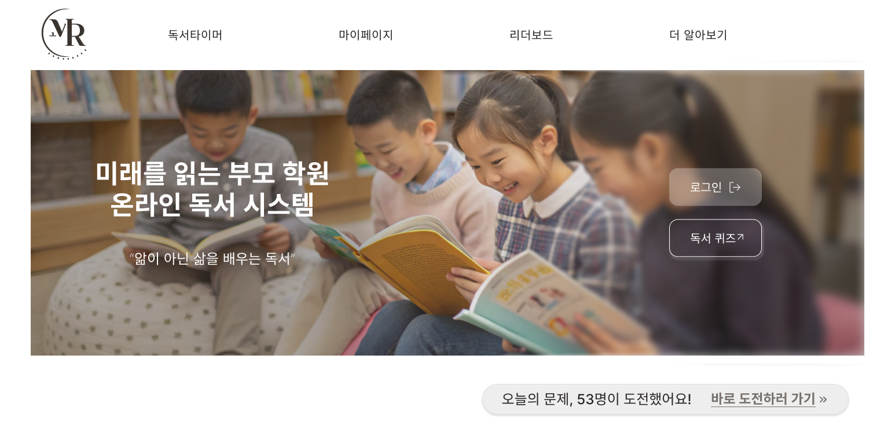
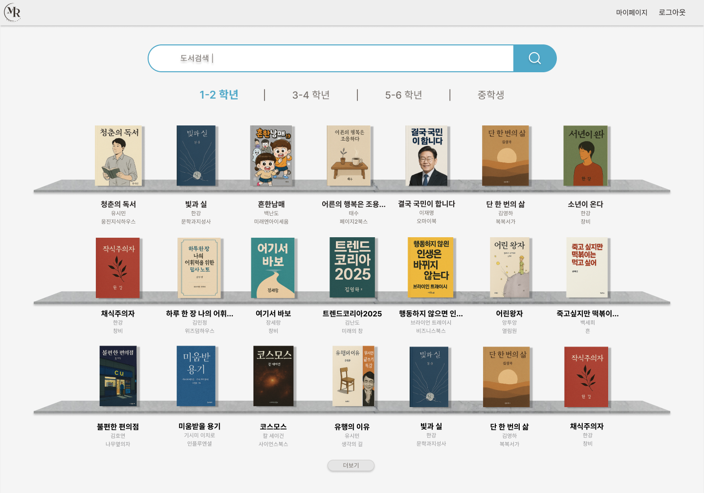
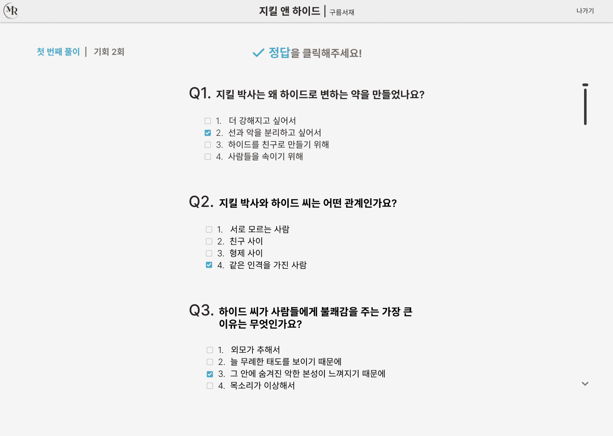
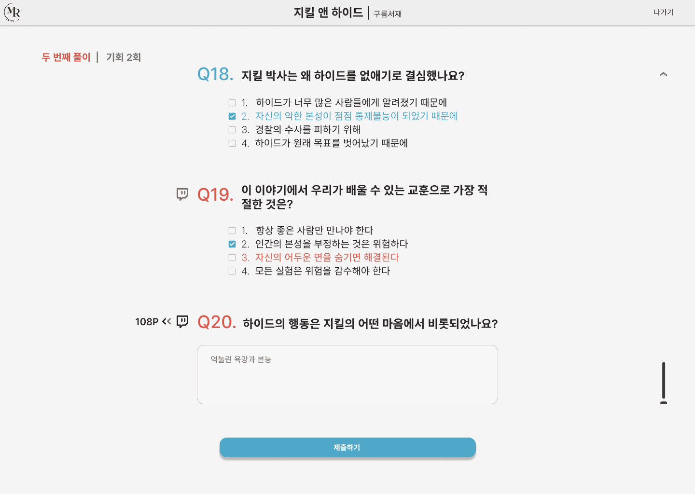
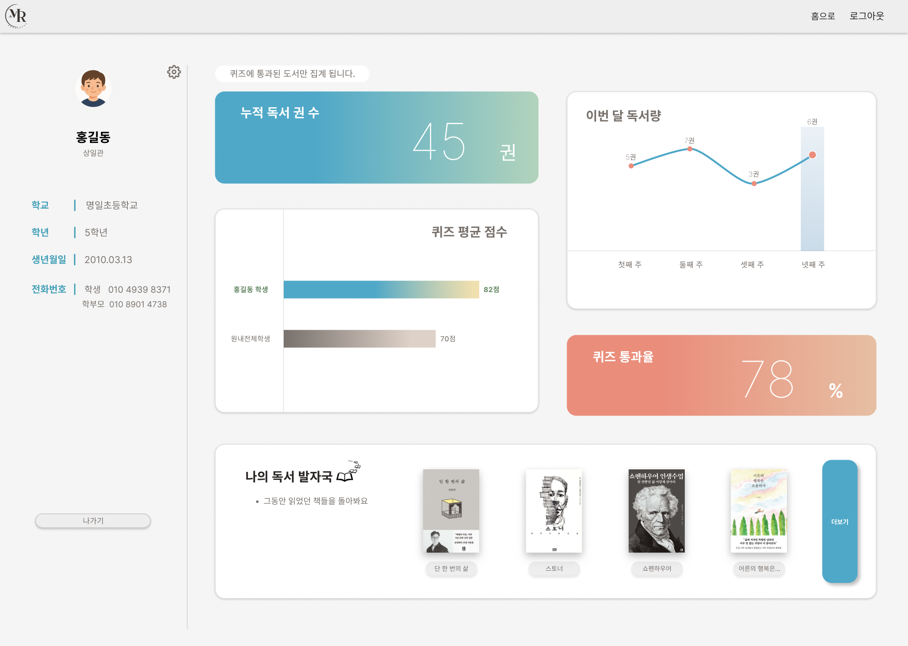
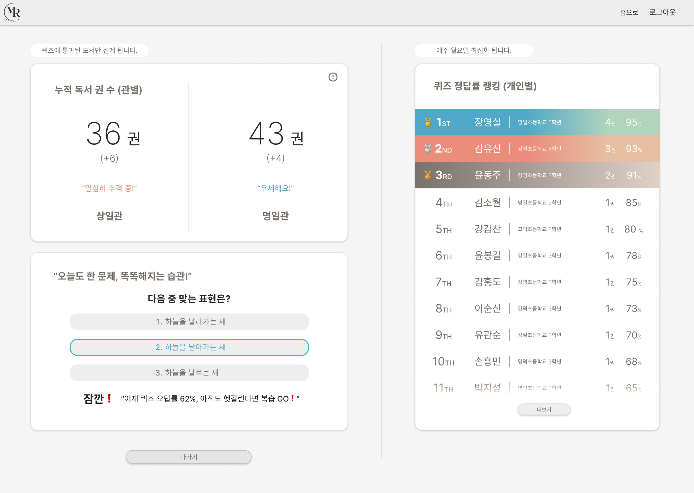
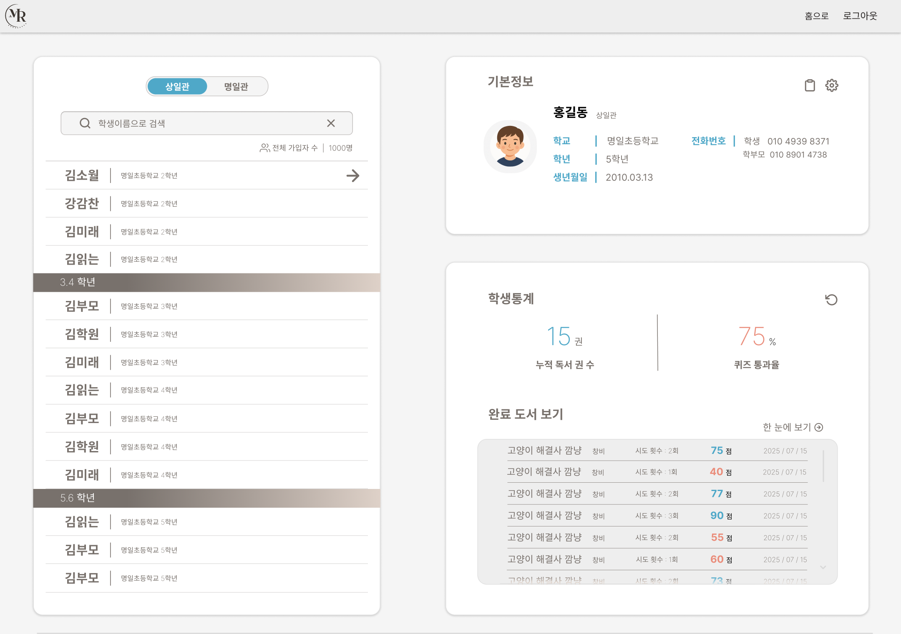
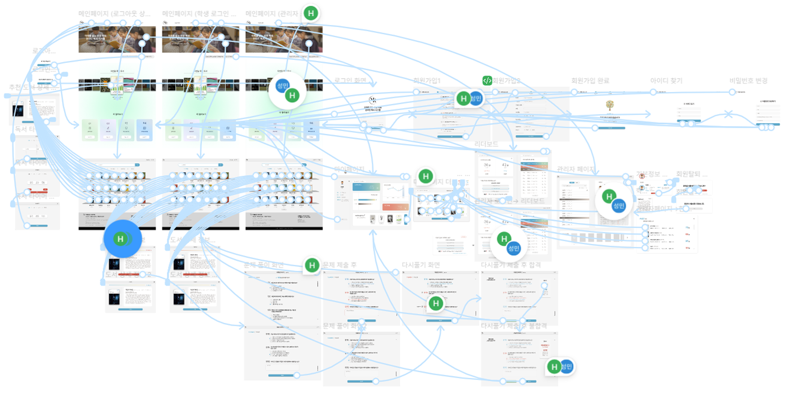

반복되는 출력과 채점
도서마다 다른 테스트지를 찾아 출력하고, 학생별 답안을 직접 채점해야 했습니다.
Service Planning · UI/UX · Dev Collaboration · 2025
제안으로 얻은 신뢰, 구현으로 이어진 기회
수작업으로 운영되던 독서 테스트와 재시험을 온라인화해, 학생의 독서 이해도를 누적 관리할 수 있도록 기획한 웹 서비스입니다. 책 선택부터 독서, 퀴즈, 오답 재풀이, 결과 기록까지 하나의 학습 흐름으로 연결했습니다.

01Opportunity
첫 제안이, 실제 서비스를 맡는 기회로 이어졌습니다
첫 번째 프로젝트 이후에도 학원에서 강사로 일하며 독서 테스트 운영을 맡았습니다. 그 발표를 계기로 기획과 디자인 역량을 인정받아, 학원에서 사용할 온라인 독서 프로그램 제작을 맡게 됐습니다.
학원에는 서비스를 기획하거나 디자인할 별도의 인력이 없었습니다. 저는 독서 테스트를 직접 운영하며 발견한 문제를 바탕으로 기능 기획, 사용자 흐름 설계, UI/UX 디자인, 인터랙티브 프로토타입 제작을 단독으로 담당했습니다. 이후 외부 개발자 한 명에게 화면별 요구사항과 동작 방식을 전달하고, 구현 결과를 검수하며 수정 사항을 조율했습니다.
첫 번째 프로젝트가 해결안을 제안한 경험이었다면, 이번에는 설계한 화면이 실제 웹 서비스로 구현되는 과정까지 맡았습니다.
02Problem
학생이 늘어날수록 채점과 재시험 관리가 어려워졌습니다
학생이 책을 고르면 선생님은 해당 테스트지를 찾아 출력하고, 답안을 직접 채점한 뒤 오답 수정이나 재시험을 안내했습니다.
당시 약 120종의 도서 테스트지를 종이로 보관했고, 하루 평균 40명의 학생이 테스트를 치렀습니다. 채점과 재시험 안내에만 매일 15분이 들었습니다.
학생 수가 늘어나자 여러 학생의 시험 진행 상태와 재시험 여부를 동시에 확인하기 어려워졌습니다. 그 결과 책의 내용을 제대로 이해했는지보다, 문제를 풀었다는 사실과 결과만 확인하는 방식으로 운영되고 있었습니다.
도서마다 다른 테스트지를 찾아 출력하고, 학생별 답안을 직접 채점해야 했습니다.
오답 수정과 재시험 여부가 시험지와 선생님의 기억에 의존해 후속 확인이 누락될 수 있었습니다.
시험지는 보관됐지만, 학생별 독서 이력과 이해도를 연속적으로 확인하기 어려웠습니다.
문제는 종이 시험지 자체가 아니라, 학생의 독서 과정과 이해도를 끝까지 관리할 수 없다는 점이었습니다.
03Learning Flow
책을 찾는 순간부터 오답을 다시 푸는 순간까지 연결했습니다
온라인화의 핵심은 시험지를 화면으로 옮기는 것이 아니라, 학생이 선생님의 도움 없이도 끝까지 진행할 수 있는 흐름을 만드는 것이라고 판단했습니다. 그래서 퀴즈 기능보다 먼저, 학생이 책을 찾는 단계부터 설계했습니다.
독서 퀴즈를 시작하려면 먼저 읽은 책을 찾아야 했습니다. 하지만 어린 학생에게는 책 제목을 정확히 기억해 검색어로 입력하는 과정 자체가 퀴즈를 시작하기 전의 진입 장벽이 될 수 있다고 판단했습니다. 오타가 나거나 제목 일부만 기억하면 원하는 책을 찾지 못하고 다시 선생님에게 도움을 요청해야 했습니다.
그래서 검색창만 제공하는 대신, 학생이 자신의 학년을 선택한 뒤 책 표지를 보며 읽은 책을 찾는 탐색 흐름을 함께 설계했습니다.

읽을 책을 정하지 못해 선생님께 반복적으로 추천을 요청하던 학생을 위해, 메인 화면에 월별 추천 도서를 노출했습니다.
검색 기능을 추가하는 데서 그치지 않고, 어린 학생이 스스로 책을 찾고 퀴즈까지 시작할 수 있는 흐름을 설계했습니다.
기존에는 선생님이 시험지를 직접 채점하고, 학생마다 틀린 문제를 확인해 다시 풀도록 안내해야 했습니다. 학생 수가 많아질수록 재시험 여부와 오답 수정 상태를 끝까지 확인하기 어려웠습니다.
이를 해결하기 위해 객관식과 주관식으로 구성된 온라인 퀴즈를 설계하고, 제출 후에는 틀린 문제만 다시 풀 수 있도록 했습니다. 헷갈리는 문제에는 정답 대신 간단한 힌트를 제공해, 학생이 책의 내용을 다시 떠올리도록 유도했습니다.


최종 점수가 70점 이상이면 통과하며, 기준에 미치지 못하면 집에서도 다시 도전할 수 있도록 했습니다.
반복되던 채점과 재시험 안내를 줄이고, 학생이 스스로 오답을 확인하고 다시 학습하는 흐름을 만들었습니다.
04Record
결과를 저장하는 데서 그치지 않고, 다시 참여할 이유를 만들었습니다
기존에는 시험지를 보관하더라도 학생이 지금까지 어떤 책을 읽었고, 얼마나 이해했는지를 한눈에 확인하기 어려웠습니다. 개별 시험 결과는 남았지만, 학생의 독서 활동이 하나의 기록으로 이어지지는 않았습니다.
그래서 마이페이지에 누적 독서 권수, 퀴즈 평균 점수, 월별 독서량, 통과율과 도서별 결과를 함께 보여주도록 구성했습니다. 학생은 자신의 독서량과 성취를 확인하고, 학부모는 자녀의 독서 활동을 확인할 수 있습니다.

시험 한 번의 결과를 저장하는 데서 그치지 않고, 학생의 독서량과 이해도가 시간에 따라 쌓이는 기록으로 만들었습니다.
기록이 쌓여도 다시 들어올 이유가 없으면 사용이 이어지지 않는다고 판단했습니다. 그래서 독서량과 퀴즈 성과를 비교하고, 보상으로 이어지는 리더보드를 구성했습니다.
직영관 별 누적 독서 권수를 비교해 선의의 경쟁을 유도하고, 우수한 관에는 매달 상품을 제공했습니다. 개인별 랭킹에서는 독서 권수와 퀴즈 정답률을 함께 보여주어, 독서량뿐 아니라 이해도까지 함께 고려해 참여를 유도했습니다.

독서 테스트를 보는 날이 아니더라도 프로그램에 들어올 이유를 만들기 위해, 매일 한 문제씩 풀 수 있는 간단한 퀴즈를 제공했습니다. 학생에게는 짧은 학습 습관을, 서비스 관점에서는 반복 방문을 유도하는 장치가 되도록 설계했습니다.
보상은 설계했지만 참여율을 확인할 지표는 함께 정의하지 못했습니다. 리더보드가 실제로 독서량을 늘렸는지 확인하려면 주간 참여율과 재방문 주기를 처음부터 측정 대상으로 잡았어야 한다고 판단했습니다.
학습 기능을 제공하는 데서 그치지 않고, 학생이 다시 돌아와 계속 참여할 수 있는 구조까지 고민했습니다.
05Admin
학생 정보를 찾고, 확인하고, 이어서 관리할 수 있도록 했습니다
학생의 독서 기록이 쌓이더라도 선생님이 필요한 정보를 빠르게 찾고 활용할 수 없다면 실제 운영 개선으로 이어지기 어렵다고 판단했습니다.
그래서 관리자 페이지에서는 학생을 검색하거나 학년·관별로 분류해 확인하고, 선택한 학생의 기본 정보와 누적 독서 권수, 퀴즈 통과율, 완료 도서와 독서 기록을 한 화면에서 확인할 수 있도록 구성했습니다.

학년·관별 분류와 학생 검색
누적 권수 · 통과율 · 완료 도서
정보 수정 · 관리 메모 · 회원 관리
특히 첫 번째 프로젝트에서 발견했던 동명이인 학생의 혼동 문제를 이번 서비스에도 반영했습니다. 이름만으로 구분하기 어려운 학생에게 관리 메모를 남기고, 학교·학년 정보와 함께 확인할 수 있도록 했습니다.
첫 프로젝트에서 발견한 동명이인·학생 관리 문제를, 이번에는 실제 관리자 기능으로 구현했습니다.
06Collaboration
외부 개발자 한 명과 함께 화면을 실제로 작동하게 만들었습니다
기능 기획, 사용자 흐름 설계, UI/UX 디자인과 인터랙티브 프로토타입 제작을 직접 맡고, 외부 개발자와 협업해 실제 웹 프로그램으로 구현했습니다. 처음부터 개발 협업 방식을 체계적으로 알고 시작한 것은 아니지만, 설계한 내용을 설명하고 구현 결과를 함께 맞춰가는 과정을 경험했습니다.

말로 설명하는 대신 눌러볼 수 있는 형태로 전달해, 서비스가 실제로 어떻게 동작할지를 먼저 합의했습니다.
화면별로 무엇이 보이고 어떤 동작이 일어나야 하는지를 피그마 Comment 형태로 정확한 화면에 정리해 전달했습니다. 정상 흐름뿐 아니라 예외 상황도 함께 적어, 구현 단계에서 되묻는 횟수를 줄이고자 했습니다.
구현된 화면과 기능을 직접 확인하며 의도한 흐름과 다른 부분을 찾아 조율했습니다. 예를 들어 프로토타입을 기준으로 구현 결과를 검수하며 기획 의도와 실제 동작의 차이를 확인했습니다. 사용 흐름에 영향을 주는 이슈는 단순히 수정 요청으로 전달하지 않고, 왜 변경이 필요한지와 기대하는 동작을 함께 설명했습니다. 이후 개발 난이도와 일정에 따라 우선순위를 조정하고 대안을 협의했으며, 수정된 기능을 다시 테스트하면서 설계와 구현 사이의 간극을 줄였습니다.
이 과정에서 좋은 화면을 만드는 것만으로 서비스가 완성되지 않는다는 점을 배웠습니다. 사용자의 문제를 정의하고, 흐름을 설계하고, 구현 과정에서 반복적으로 확인하고 조율하는 과정이 이어져야 하나의 서비스가 완성된다는 것을 알게 되었습니다.
07Reflection
무엇을 측정할지는 정하지 못한 채 떠났습니다
이 서비스는 학원에 도입되어 지금도 운영되고 있습니다. 다만 저는 런칭 직후 창업에 도전하기 위해 학원을 떠났고, 서비스가 실제로 어떤 변화를 만들었는지 확인하지는 못했습니다.
지금 돌아보면 아쉬운 것은 결과가 없다는 사실보다, 런칭 전에 무엇을 측정할지 정해두지 않았다는 점입니다. 채점에 걸리던 시간, 재시험 완료율, 학생의 재방문 주기처럼 만들기 전에 정의했어야 할 지표가 분명히 있었습니다.
화면을 설계하는 일과, 그 화면이 만든 변화를 확인하는 일은 다른 문제였습니다. 이후 프로젝트에서는 만들기 전에 무엇을 측정할지 먼저 정의하는 것을 원칙으로 삼았습니다.
첫 프로젝트에서 적성을 발견했다면, 이번 프로젝트에서는 그 적성을 실제로 작동하는 서비스로 만드는 과정까지 경험했습니다.